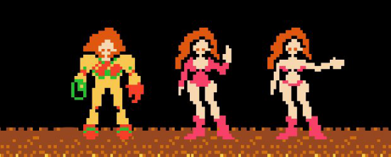

Samus Aran (Metroid 1986)
Nintendo
On change de registre avec un personnage qui prend part cette fois-ci à l’action avec Samus Aran, l'héroïne de Metroid (1986) créée par Nintendo. Elle est souvent citée comme le "premier personnage féminin humain jouable" dans un jeu vidéo. Cependant, cette information n’est pas connue des joueurs. En effet ce n’est qu’à la fin de l’aventure qu’elle est révélée, son statut de combattante passant avant son statut de femme en fait donc un personnage très peu sexualisée lorsqu’elle est en tenue de combat. Cependant, un point intéressant est à noter. En effet, en fonction du score du joueur, Samus Aran se révèle à la fin plus ou moins dévêtue avec des mensurations très exagérées.

On accorde tout de même beaucoup de crédit à ce personnage qui reste le premier personnage jouable féminins mais surtout héros principale de son jeu.